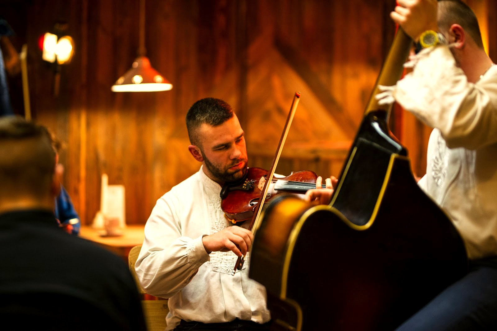

Co wieczór
Kapela góralska na żywo
Codziennie wieczorem (ok. 18:30-22:00) gra na żywo kapela góralska - autentyczna muzyka podhalańska budująca biesiadny klimat karczmy.

Latem
Ogród w sercu Krupówek
Ogródek gastronomiczny - posiłki na świeżym powietrzu z widokiem na gwarne Krupówki.

Dla grup
Imprezy i większe spotkania
Dwa poziomy oraz kameralna antresola - przestrzeń zarówno dla większych grup, jak i dla gości szukających bardziej intymnej, kameralnej atmosfery. Przygotujemy menu dla grupy i zadbamy o oprawę z góralską kapelą - rezerwacje większych stołów najlepiej ustalić z wyprzedzeniem.